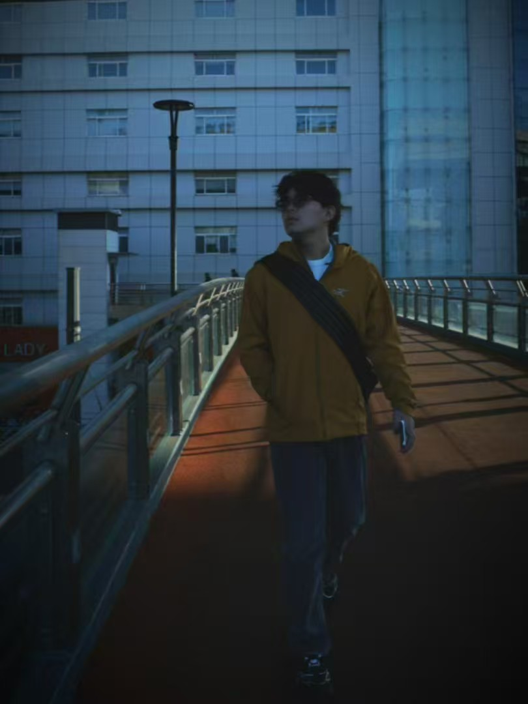

Ph.D. StudentEast China Normal University, Shanghai, China Research InternHunyuan (LLM Department), Tencent, Shanghai, China Email: yangfuli1215@gmail.com [Google Scholar] [GitHub] |
 |
Vision-centric Reasoning, Post-trianing for LLMs/MLLMs/UMMs.
[2026-Now] I work as a research intern (Project Up) at Hunyuan (LLM Department), Tencent.
[2025-2026] I worked as a research intern (Plan A) at Bailing (Ming Team), Ant Group, supervised by Dr. Ziyuan Huang.
[2024-Now] I am pursuing my Ph.D. in LPAIS, ECNU, supervised by Prof. Yue Lyu.
[2023-2024] I worked as a research visitor at XMU, with research interests in MM info. processing.
[Prev.] I received my B.Eng. in Electronic Engineering from FZU.
[2026-05] 🎉PFlowNet is accepted by ICML 2026.
[2026-02] 🔥DeepScan is accepted by CVPR 2026.
[2025-09] 🎉MoB is accepted by NeurIPS 2025.
[2025-07] 🎉MSA² is accepted by ICCV 2025.
[2024-09] 🎉FaRE is accepted by ACCV 2024 (Oral).
[2024-07] 🎉Free Lunch is accepted by ACM MM 2024.
[2024-04] 🔥DS-TDNN is accepted by TASLP.
* Equal Contribution
Perceptual Flow Network for Visually Grounded Reasoning
ICML 2026
[Paper]
StruVis: Enhancing Reasoning-based Text-to-Image Generation via Thinking with Structured Vision
arXiv preprint 2026
[Paper]
TC-AE: Unlocking Token Capacity for Deep Compression Autoencoders
arXiv preprint 2026
[Paper]
DO-Bench: An Attributable Benchmark for Diagnosing Object Hallucination in Vision-Language Models
arXiv preprint 2026
[Paper]
DeepScan: A Training-Free Framework for Visually Grounded Reasoning in Large Vision-Language Models
CVPR 2026
[Paper] [Code 🌟230+]
Why 1 + 1 < 1 in Visual Token Pruning: Beyond Naive Integration via Multi-Objective Balanced Covering
NeurIPS 2025
[Paper]
MSA²: Multi-task Framework with Structure-aware and Style-adaptive Character Representation for Open-set Chinese Text Recognition
ICCV 2025
[Paper]
FaRE: A Feature-Aware Radical Encoding Strategy for Zero-Shot Chinese Character Recognition
ACCV Oral 2024
[Paper]
Free Lunch: Frame-level Contrastive Learning with Text Perceiver for Robust Scene Text Recognition in Lightweight Models
ACM MM 2024
[Paper]
Dual-stream Time-Delay Neural Network with Dynamic Global Filter for Speaker Verification
IEEE/ACM Transactions on Audio, Speech, and Language Processing, 2023
UniVR: A Unified Framework for Pitch-Shifted Voice Restoration in Speaker Identification
APSIPA ASC 2023
[Paper]
DeflickerCycleGAN: Learning to Detect and Remove Flickers in a Single Image
IEEE Transactions on Image Processing, 2023
[Paper]
Reviewer for ICML, NeurIPS, ICLR, CVPR, ECCV, ICCV, and AAAI.